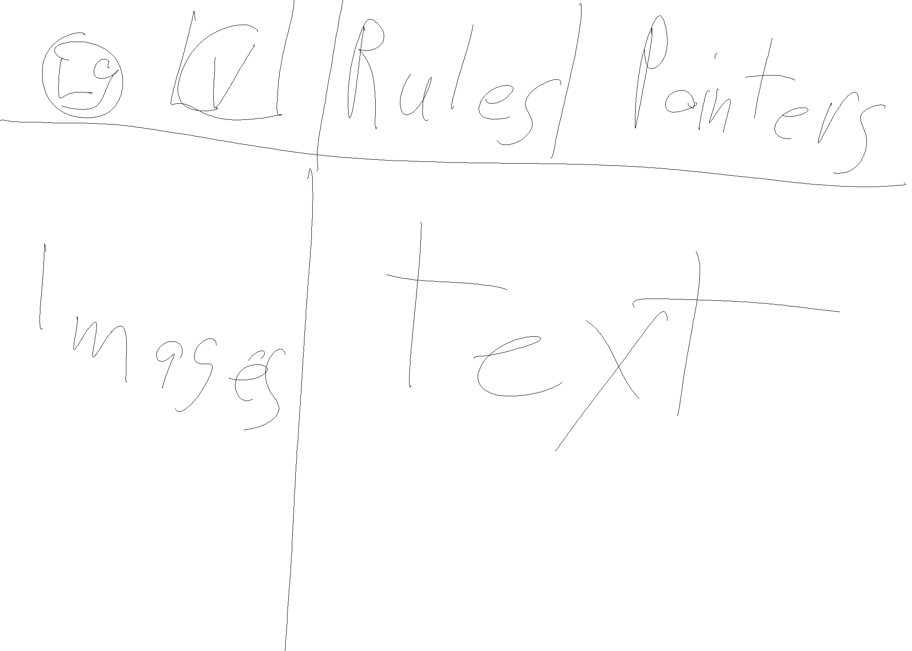
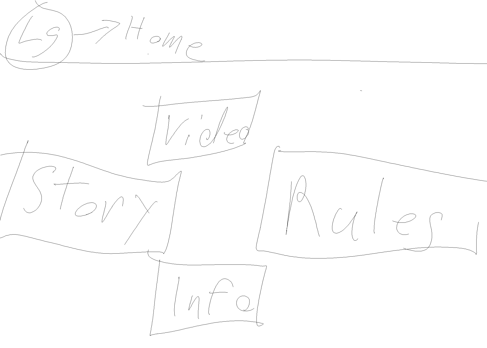
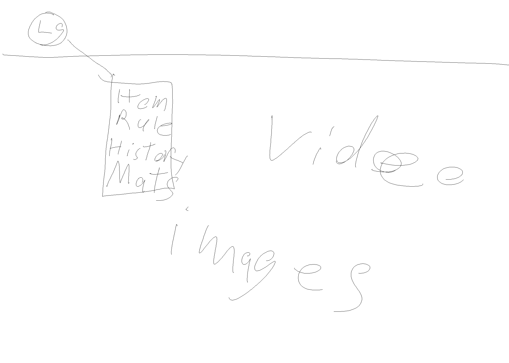

Challenge
This lab was challenging for me because I can be a bit of
a perfectionist and had a hard time doing my sketches quickly without
overthinking every decision I made. It helped me to reference my subject
and material to get a general feel of aesthetic before I began each sketch.
Problems
I did not run into any problems during this lab. My group and I have
been working well together but communication could be a bit better, it is
very good compared to a lot of other groups I have been in. Group work can
often prove difficult as there are many elements that need to come together.
Results
This lab has resulted in sketches which will assist
us in designing our final project pages, and help our group decide on a
theme and elements such as for the nav and footer. Hopefully us
doing these sketches will help us in ideating for future projects, and
to use them with other ideation techniques.

1st Layout Idea

2nd Layout Idea

3rd Layout Idea